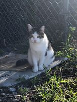
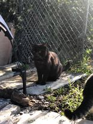
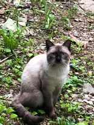
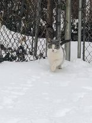
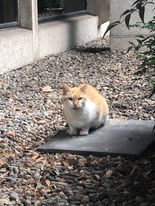
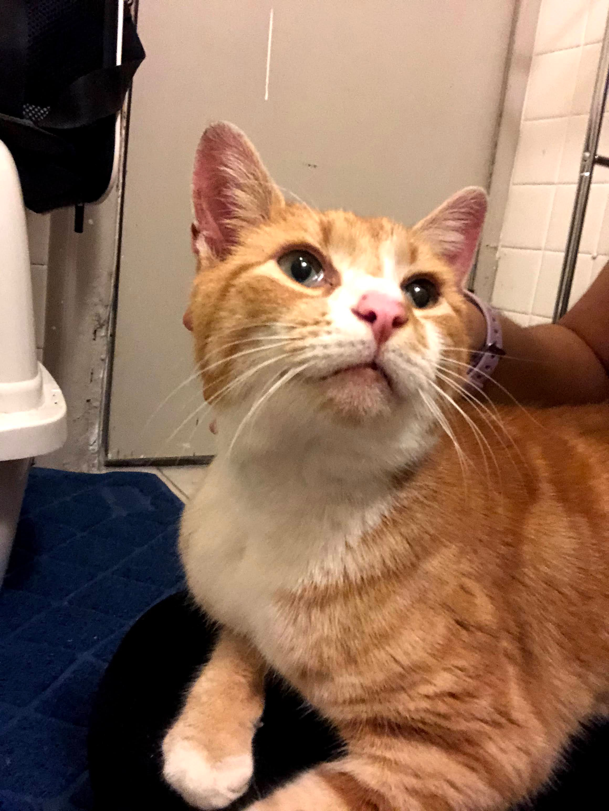
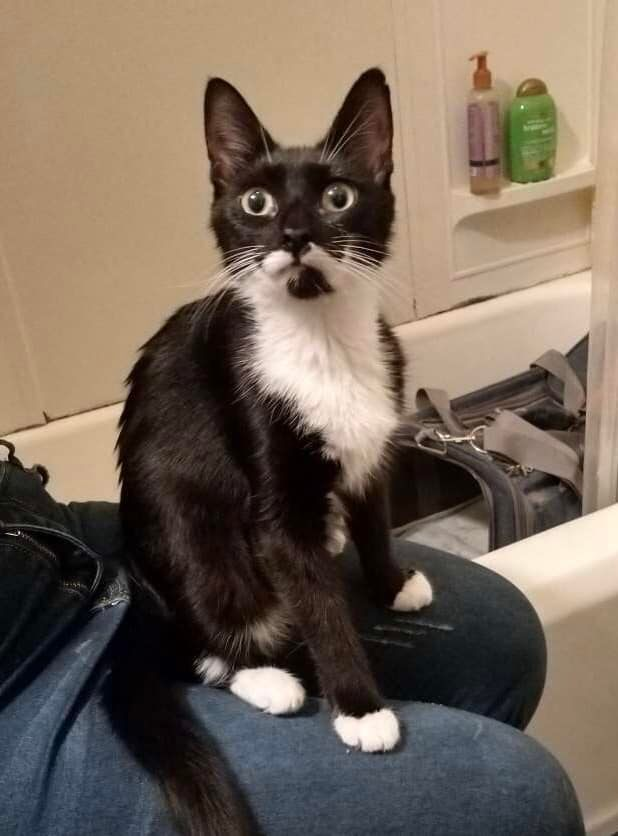
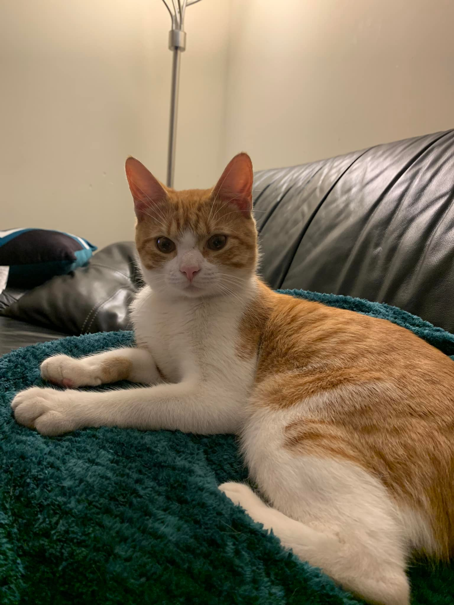
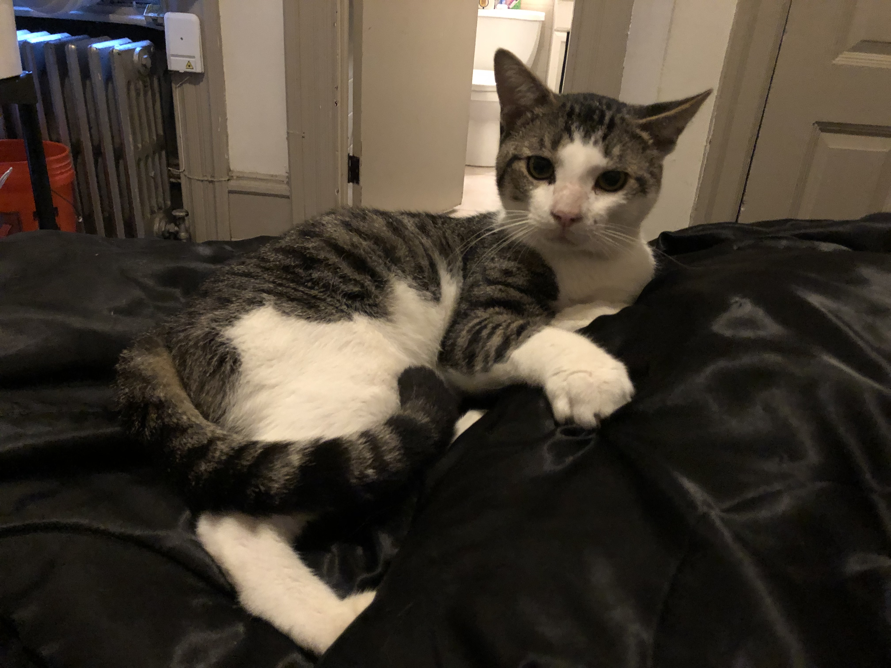
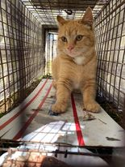

Mary

Mary, her littermates, and father all lived in the area that would eventually become the Temple Community Garden. Her littermates and father were socialized enough to be adopted, with only Mary remaining feral. Mary used to live in the garden with Obi, but now the garden is solely her territory.
Obi

Obi was an old black cat, who has since passed away. He belonged to the colony at the Temple Community Garden, and had a reputation for caring for other cats, particularly kittens. Other abandoned cats have been seen following the feral Obi, who would direct them to food and shelter.
Sylvester

Sylvester is a pretty siamese point colony kitty. His appearance is very indicative of a special breed, and therefore his volunteer feeders wonder where he may have come from.
Rose

Rose was found in the snow, living in an abandoned house. She was intially shy, but easily warmed up to people. From her friendly attitude, it was clear she was an abandoned cat, and from the state of her fur, had been abandoned for a long time. After being brought inside, she was accepted as an intake with PAWS, where they exclaimed that she was extremely lovable and set her up for adoption.
Anish

Anish is a colony kitty that lives behind tuttleman. He is loved by the local librarians, and has a best kitty friend named Paley who lives behind tuttleman with him. They are happily fed every day, checked on to make sure they remain healthy, and set up with shelter boxes to stay warm when it gets cold.
Nacho

Nacho was a super friendly adult orange cat who was found outside in winter. Nacho was suspected to be an abandoned cat. He had been seen regularly outdoors and was being fed by a local who left food on their doorstep for him, but wouldn't let him stay inside. He was easily caught, fixed, and sent to a rescue to find a forever home.
Soba

Soba was found crouching outside, terrified of loud noises and cars. When spoken to, she perked up and rolled over for pets. It was evident that she was someone's pet. After a brief search, it was determined that she was a lost cat, who escaped because she was unfixed, and had kittens at home waiting for her to come home. She was fixed by Temple Cats, and now happily lives with her kittens.
Cheddar

Cheddar was an abandoned cat who was rescued by new student owners, but he accidentally escaped, most likely due to being unfixed. With Temple Cat's help, he was located by another student, reunited with his owners, and scheduled for a neuter surgery and microchipped, so that if he is ever lost again, he can easily be found.
Wally

Wally is a special kitty who is currently up for adoption via Temple Cats. He has an interesting demeanor, he is extremely friendly and sweet, however is like a puppy. He loves being walked on a leash! He is suspected to have been abandoned, but has fared well for himself by following students around and charming them into petting him.
Ginger

Ginger was a kitten found outside near the Temple Community Garden. It was evident that she must have spent some time outside, because she was very shy. However, since she was a kitten, she was fostered and socialized, and then eventually put up for adoption.